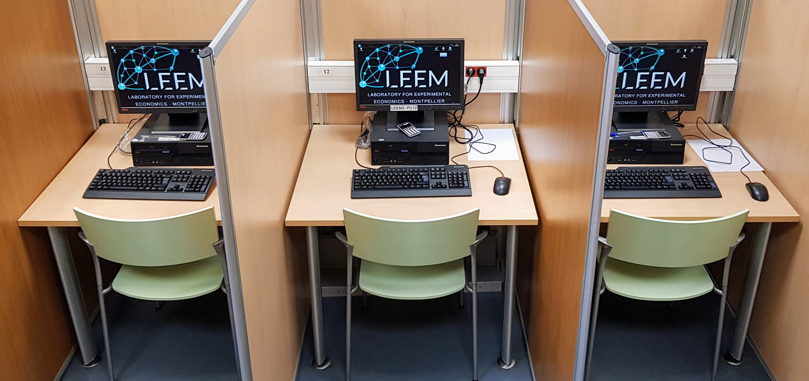
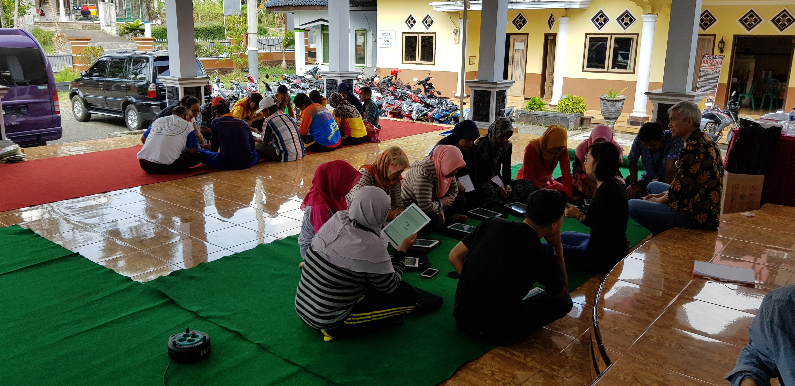
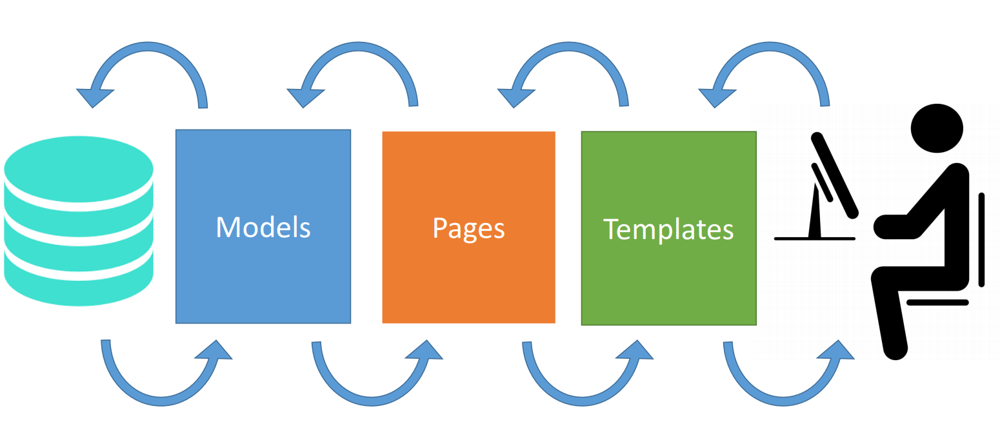
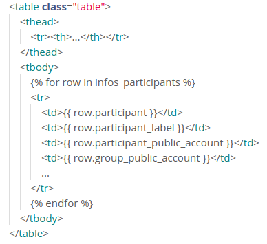

oTree
An open-source platform for behavioral research
Dimitri DUBOIS
dimitri.dubois@umontpellier.frTable of contents
- Introduction
- Installation
- Creation of an application
- Terminology
- First application - Demographic questionnaire
- Second application - Public good game
- Third application - Investment game
- Improvement of the existing applications
- Tests and simulations
- Rooms, Payments and Admin Report
- Internationalisation
- HTML and CSS
- Javascript
- Bootstrap
- References
Introduction
- licensed under the MIT open source license
- website: https://www.otree.org/
- documentation: https://otree.readthedocs.io/en/latest/
- citation:
Chen, D.L., Schonger, M. & Wickens, C., 2016, "oTree—An open-source platform for laboratory, online, and field experiments", Journal of Behavioral and Experimental Finance 9, pp. 88-97
- can run on any device that has a web browser: desktop computer, tablet or smartphone
- need a configured web serveur with python and the django framework
Can be used for lab experiments

Can be used for lab-in-the-field experiments

Can be used for internet experiments
Installation
Anaconda
- Anaconda is a Python distribution that includes all the packages needed for data science
- easy to install and manage
- https://www.anaconda.com/products/individual
- Steps of the installation process here
Pycharm
- Python IDE (Integrated Development Environment)
- https://www.jetbrains.com/pycharm/
- Steps of the installation process and configuration for oTree here
Creation of an application
- in pycharm's console (terminal):
otree startapp application_name - it creates a directory application_name and put inside the skeleton of the application
- 1 python file : __init__
- 2 html files in the templates directory: MyPage et Results
- __init__ file contains Python code, with several classes: some are related to the model (functions and data storage) and some to the pages (link between the classes related to the model and the html files)
- MyPages and Results are two example html files, they should be renamed

Practice
create a new application called demographics
The settings file
- contains the configuration parameters
- SESSION_CONFIGS contains the list of applications
- creation of a dictionnary for each application (or set of applications if the experiment is composed of several applications)
- minimum keys : name, display_name, app_sequence, num_demo_participants
- app_sequence is a list of application names
example : app_sequence=["public_good", "demographics"]
means that the application public_good starts first and once finished the application demographics starts
dict(
name="demographics",
display_name="Demographics",
app_sequence=["demographics"],
num_demo_participants=1
)
Practice
add the dict for demographics in the settings file
Terminology
Session
- in experimental economics terminoly a session begins when the participants are seated in the laboratory and ends when they leave the laboratory
- in otree terminology a session begins when the experimenter starts the program of the experiment and ends when he/she closes this program
Participant
- refers to the subjet
- one participant for each connection to the server in a session
Round
- a repetition in a repeated game
- if one-shot game there is only one round
Subsession
- as a session can include several applications, each application is considered as a subsession
- contains all the participants of the application
Group
- inside the subsession it is possible to form groups of participants
- the group class manages the participants that are grouped
- groups can be (re)formed at the beginning of each round
Player
- each participant is a player in a subsession / application
- a participant can participate to several applications - in each application he/she is a player
- the player takes decisions and sees informations through the html pages
Summary
- a session contains one or several applications, each application is considered as a subsession
- each subsession / application contains all the participants of the session
- an application contains one or several rounds
- players in an application can be grouped if needed
First application
Demographic questionnaire
The models file
- Contains four classes: Constants, Subsession, Group and Player
- Constants class is the place to set parameters (num_rounds, players_per_group etc.)
- Subsession, Group and Player can store data (fields in the database)
- in theses classes, it is also possible to define functions that manipulate these data
The Player class
- store players' fields : gender, year_of_birth, nationality etc.
- fields are stored in the database
- types of fields: IntegerField(), FloatField(), StringField(), LongStringField(), BooleanField(), CurrencyField()
- fields are classes of the models module, that's why the field creation starts with
models.
Creation of a field
year_of_birth = models.IntegerField()
Field creation can be completed with arguments
that will be used in the web browser to display the field
min=, max=: for FloatField and IntegerFieldlabel=: the text that will be displayed beside the field on the screeninitial=: to set the initial valueblank=True: if the field is not mandatorychoices=[list_of_choices]: to set a list of possible answerswidget=Widgets.___: to set the kind of widget that will be displayed on the screen to represent the field
Choices
- a list of elements
gender = models.StringField( choices=["Female", "Male"], label="Select your gender") - can also be a list of tuples : the first element is stored in the database and the second is displayed
gender = models.IntegerField( choices=[(0, "Female"), (1, "Male")], label="Select your gender") - good pratice to use list of tuples for coding variables, mandatory if multi-languages application
Widgets
- graphical objects that display the fields
- IntegerField, FloatField, CurrencyField, StringField and LongStringField : automatic area
- BooleanField: vertical RadioButton
- Choices : by default dropdown list
- possible to set RadioSelect (vertical) or RadioSelectHorizontal for choices
Practice - Create the fields of the demographic questionnaire
- year of birth
- gender
- Marital status (Single, Married, Divorced, Widowed)
- Student (Yes / No)
- Level of study (Bac, Bac+1, Bac+2, ..., Bac+8)
- Field of study ("Biology", "Economy", "Law", "Management", "Mathematics", "Medecine", "Physics", "Psychology", "Other")
The Pages file
- between the model and the templates (html files)
- each class represents a web page
- two kinds of pages : Page and WaitPage
- Page : either to display an information or to get a decision
- WaitPage : to wait for the other players (group members or all the players of the subsession)
- each class inherits either of Page or WaitPage
Page with a decision
- the class name refers to an html file with the same name : class Decision for the Decision.html file
- must specify the model (group or player) and the fields
form_model = "___": player (99% of the time, but can be group)form_fields = []: must be a list even if only one field- fields given in form_fields must have the same names than in the models file
form_model = "player"
form_fields = ["year_of_birth", "gender", ...]
Page without a decision (only information)
- let
passafter the class declaration
Practice
- rename MyPage.html to Questionnaire.html in the templates directory
- rename class MyPage to class Questionnaire in the pages.py
- set the attributes of class Questionnaire : form_model and form_fields
- the page_sequence list at the bottom of pages.py file provides the sequence the pages will be displayed each round of the subsession
- in page_sequence remove ResultsWaitPage (not necessary in this application)
The html files (templates)
- html tags can be used (p, ul, li, table, etc.)
- css and javascript too
- Constants, Subsession, Group and Player are loaded in the templates
- to display a field the subject has to fill in
{% formfields %}to display all the fields given in the form_fields list of the corresponding class in pages.py file{% formfield player.the_field %}to display only the form field the_field from class player{% formfield player.the_field label="the label" %}to set the label (if not defined in models.py)
- to display a field as an information (not a field to fill in)
{{ player.the_field }}
- the
{% next_button %}boutton submits the form
Practice
- fill in the Questionnaire.html file to display the fields - use
{% formfields %}
Test the questionnaire
- in pycharm's terminal : otree devserver
- it starts a local web server
- in the web browser : http://127.0.0.1:8000/
Second application: a Public good game
The public goods game
- Fixed groups of size 4 (randomly formed in the first round, then fixed for the rest of the rounds)
- Endowment of 20 tokens
- Two accounts : private (1 token = 1 ECU), public (1 token = 0.50 ECU for each group member)
- 10 rounds
- Two screens per round : Decision and Results
- Results screen : player's investment in both accounts, total in the public account by the group and round payoff
- A final screen (End) that displays the final payoff (cumulative payoff) in euros
The classes in the models file
- Constants: game's parameters that are the same for all participants and don't change over time (rounds)
- Subsession: fields/data shared by all participants in a specific round (so may change from one round to the other)
- Group: fields/data shared by all members of one group in a specific round
- Player: fields/data that are unique for each player in a specific round
- Each round oTree creates a new record in the tables subsession, group and player
The Constants class
- store the variables that are the same for all players and all rounds
- variables are not stored in the database
- by default 3 attributes: name_in_url, players_per_group and num_rounds
- name_in_url : the name that will be displayed in the url for this application. It can be changed
- players_per_group : number of players per group. None for only one group (no group)
oTree calculates automatically the number of groups (number of participants / players_per_group)
- for a public good game application, this is the right place to store some variables like
endowment = 20 private_account_return = 1 public_account_return = 0.5
The Subsession class
- by default nothing in the class (pass)
- possible to create fields that will be shared by all participants
-
in the subsession class, possible to refer to the session and the current round with
self.sessionandself.round_number -
several methods can be called
self.get_groups(): returns the groups of the subsession (list)self.get_players(): returns the players of the subsession (list)self.group_randomly(): form random groupsself.group_like_round(round_number): set the same groups than in round round_number- if something must be done at the creation of the session the function
creating_session()must be (over)written
Example : Random group formation in the first round, after that groups stay unchanged
class Subsession(BaseSubsession):
def creating_session():
if self.round_number == 1:
self.group_randomly()
else:
self.group_like_round(1)
creating_session() is called when the session is created, and is called once for each round
The Group class
- fields for the group
- Main existing methods
self.get_players()self.in_round(round_number),self.in_previous_rounds(),self.in_all_rounds()
- possible to create new methods
Example
class Group(BaseGroup):
total_public_account = models.IntegerField()
def compute_total_public_account(self):
self.total_public_account = sum(
[p.public_account for p in self.get_players()])
public_account must be a field in the player class
The Player class
- Fields and methods at the player level
self.groupto access to the fields of player's groupself.get_others_in_group()to get the list of the other players in the group- field
self.payoff(CurrencyField) already created, do not create a new one
private_account = models.IntegerField()
public_account = models.IntegerField(
min=0, max=Constants.endownment,
label="Enter the number of tokens you place in the public account")
def compute_payoff(self):
self.payoff = (self.private_account *
Constants.private_account_return +
self.group.total_public_account *
Constants.public_account_return)
The Page class (and classes that inherit from it)
Method is_displayed(self)
- return True or False
- if True the corresponding web page is displayed
- if False the corresponding web page is not displayed
class End(Page):
def is_displayed(self):
return self.round_number == Constants.num_rounds
the page is displayed only if the current round is the last one
Method vars_for_template(self)
- return a dictionnary
- the dictionnary can be used in the template corresponding to the page
class Results(Page):
def vars_for_template(self):
return dict(
contribution_of_others=sum(
[p.public_account for p in
self.player.get_others_in_group()]))
in the template it is now possible to display the total number of tokens placed by the other group members in the public account :
The other members of your group placed
{{ contribution_of_others }} tokens in the public account.
Method before_next_page(self)
execute the instructions in the method before loading the next page
Example : if we only ask to the player how many tokens he places in the public account
class Decision(Page):
form_model = "player"
form_fields = ["public_account"]
def before_next_page(self):
self.player.private_account = (Constants.endowment -
self.player.public_account)
Template files
- Constants, subsession, group and player are loaded
{% formfield player.field %}to display a field{% formfield player.field label="the text to display" %}if the label is not defined in the field declaration (models file)
{% block title %}
Decision - Round {{ player.round_number }}
{% endblock %}
{% block content %}
You are endowed with {{ Constants.endowment }} tokens.
{% formfield player.public_account label="Enter the number
of tokens you place in the public account" %}
{% next_button %}
{% endblock %}
WaitPage
- to wait the other participants, either all participants of the subsession (
wait_for_all_groups = True) or only members of the group (default) title_text = ""andbody_text = ""to override default text- if a method must be called after all group members arrive :
hereafter_all_players_arrive = "compute_total_public_account""compute_total_public_account"refers to the method in the group class, because by defaultwait_for_all_groups = False, so it concerns only the players in the (same) group
class DecisionWaitForGroup(WaitPage):
title_text = "Please wait ..."
body_text = "We are waiting for the other participants"
after_all_players_arrive = "compute_total_public_account"
By (personal) convention, I add "WaitForGroup" to the Page class name if we wait only the group members and "WaitForAll" if we wait for all the participants in the subsession (with wait_for_all_groups = True)
Manual WaitPage
- necessary, for example, if the experimenter wants to read the instructions aloud after the participants have already read them once in silence
- create a Page without any button, so that participants are forced to wait
- use "Advance slowest user" (server web interface in the "Monitor tab") to move to the next step
- by personal convention the name of this kind of page ends with "WaitMonitor"
Settings file
REAL_WORLD_CURRENCY_CODE = 'EUR'USE_POINTS = TruePOINTS_CUSTOM_NAME = "ECU"- CurrencyField is in ECU if
USE_POINTS = Trueelse in Euros
Pratice - A public good game application
- Fixed groups of size 4 (randomly formed in the first round)
- Endowment of 20 tokens
- Two accounts : private (1 token = 1 ECU), public (1 token = 0.50 ECU for each group member)
- 10 rounds
- Two screens per round : Decision and Results
- Results screen : player's choice, total in the public account by the group and round payoff
- A final screen (End) that displays the final payoff (cumulative payoff) in euros
- Add the demographic questionnaire at the end of the public good game
Third application : the Investment game
The investment game
- pairs of players
- 2 roles : trustor and trustee, 1 trustor and 1 trustee in each pair
- both roles endowed with 10 Euros (or ECUs)
- trustor chooses how many Euros/Ecus he/she sends to the trustee
- each amount sent by the trustor is tripled by the experimenter, i.e. the trustee receives 3 times the amount sent by the trustor
- the trustee sends back how many Euros/Ecus he/she wants, between zero and the receveid amount
- Trustor's payoff : 10 - amount sent + amount returned by the trustee
- Trustee's payoff : 10 + 3 x amount sent by the trustor - amount sent back to the trustor
Role
- define the roles in the Constants class, with variables starting with
role_role_trustor = "trustor" role_trustee = "trustee" - in each group otree will give the player with id_in_group == 1 the trustor role and the player with id_in_group == 2 the trustee role
Role can be used as a condition to display a page
class TrustDecision(Page):
def is_displayed(self):
return self.role == Constants.role_trustor
class ReciprocityDecision(Page):
def is_displayed(self):
return self.role == Constants.role_trustee
Conditional structure in the templates
{% if condition %} ... {% elif other_condition %} ... {% else %} ... {% endif %}
{% if player.role == Constants.role_trustor %}
You are the trustor in the game.
{% else %}
You are the trustee in the game.
{% endif %}
Currency filter in the template
- to display an Integer or a Float as a currency
{{ 10|c }}will be displayed 10.00 € if USE_POINTS = False{{ 10|c }}will be displayed 10.00 ECU if USE_POINTS = True- can be a variable :
{{ player.amount_sent|c }}You sent {{ player.amount_sent|c }} to the trustee and he/she sent you back {{ player.amount_returned|c }}.
Set min, max or choices of a field dynamically
- in the investment game the trustee can only sends back an amount lower or equal to the amount he/she received. This maximum cannot be set before the decision of the trustor.
- possible to define the min, the max or the choices of a field after its declaration in the player class
- in the player class, create a method with the field name and min, max or choices after an underscore
class Player(BasePlayer):
...
amount_sent_back = models.IntegerField(
min=0, label="Enter the amount you send back to the trustor")
def amount_sent_back_max(self):
return self.amount_received
Practice
Write the code of the application corresponding to the investment game
Tricks and tips to improve the existing applications
Demographics questionnaire : fields in a table
- create an html table, with tags table, tr and td
- use a for loop in the template to, for each field, add the label of the field in the first column and the widget of the field in the second column
- for loop in the template, over the form fields
<table class="table">
{% for field in form %}
<tr>
<td>{{ field.label }}</td>
<td>{{ field }}</td>
</tr>
{% endfor %}
</table>
History in the public good game
- a table in the results html file that displays what appened in the previous rounds
- write a for loop to display the field values for the previous rounds
player.in_previous_roundsto access to the player's fields in the previous roundsplayer.in_all_roundsto access to the player's fields in the previous rounds and the current one
<table class="table">
{% for p in player.in_all_rounds %}
<tr>
<td>{{ p.round_number }}</td>
<td>{{ p.private_account }}</td>
<td>{{ p.public_account }}</td>
...
</tr>
{% endfor %}
</table>
Set parameters in the session configs and get them in the application.
- for example, if we want to run some public goods games sessions with differents values of the marginal per capita return for the public good (variable public_account_return)
- if we set the parameter in the session configs then it is possible to run the sessions without changing the code in the application
- add a key / value in the SESSION_CONFIGS dict corresponding to the application
dict( name="public_good", display_name="Public Good Game", app_sequence=["public_good"], num_demo_participants=4, public_account_return=0.6 ),
- get the value in the Subsession class with
self.session.config["key"]
class Subsession(BaseSubsession):
public_account_return = models.FloatField()
def creating_session(self):
self.public_account_return = \
self.session.config.["public_account_return"]
Remove the public_account_return parameter in the Constants class and replace in the code
Constants.public_account_return by self.subsession.public_account_return
(in the calculation of the round payoff)
Add the instructions in the public good game application
- create an InstructionsTemplate.html file and write the instructions of the game (dowload the instructions)
- use variables from class Constants (group size, num_rounds etc.), and subsession (public_account_return)
- include this file in an Instructions.html page (
{% include "project_name/InstructionsTemplate.html" %}) - create an Instructions class in the pages file (add is_displayed function)
- add a wait page InstructionsWaitForAll(WaitPage) or InstructionsWaitForMonitor(Page)
- add both pages in the app_sequence of the application
Add a button to display the instructions
- download the TemplateModal.html store the file in the
_template/global directory - in the page you want to add a button to, write the following code:
- add the bottom of this page, before
{% endblock %}, write:{% include "global/TemplateModal.html" with title="Instructions" content="project_name/InstructionsTemplate.html" %}
Create a welcome page with the logo of your lab
Add an image in a template
- create a "static" directory inside the project directory
- inside this directory create a subdirectory with the name of the project (as in the template directory)
- add the picture inside this directory
- in the terminal enter
otree collectstatic - create a Welcome page (pages.py and Welcome.html in the template directory)
- in the template
<img src="{% static 'projet_name/picture_name.png' %}" /> - add the welcome page in the app_sequence
Tests and simulations
Tests
- in the tests file
- inside the function play_round of the class PlayerBot
- this function is called every round (in test mode)
yield (the_page)if the page contains only informations and a buttonyield (the_page, dict(field=field_value))if the page contains fields to fill in
if self.round_number == 1:
yield (pages.Instructions)
yield (pages.Decision,
dict(public_account=random.randint(0, Constants.endowment)))
if the page doesn't contain a button use Submission with check_html=False
from otree.api import ..., Submission
if self.round_number == 1:
yield (pages.Instructions)
yield (Submission(page.InstructionsWaitMonitor, check_html=False))
to run the test
otree test application_name- application_name must be an entry in the SESSION_CONFIGS list
- by default test for num_demo_participants participants
otree test application_name number_of_participantsto test with number_of_participants participants
otree test public_good 20
to run the test with the browser
- add
use_browser_bots=Truein the application entry in the SESSION_CONFIGS - run otree devserver
- in the demo page click on the application
- each link will open a new tab and play automatically
Practice
- write the tests file of the public good game application and the demographic questionnaire
Simulations
- export the data from the test in a csv file to check the fields values and write in advance the statistical analysis
- add
--export directoryafter the test command
otree test public_good 100 --export /tmp/public_good_simul
Practice
- create simulated data for the public good game with 100 participants (and export the data)
- in the corresponding entry in the settings file, set app_sequence = ["public_good", "demographics"]
Merge data of several applications
- data preparation is the first step after data collection
- participant.code can be used to merge data
- open the simulated data in a jupyter notebook
- best practices:
- remove the unnecessary columns
- rename the columns that have long names
- remove the columns that will be duplicated if files are merged (session.code, session.label, subsession.round_number etc.) - let theses columns in the main dataframe (the one with higher number of rounds)
Python code with pandas
df_pgg = pd.read_csv("...")
df_pgg = df_pgg[[columns we keep]].copy()
df_pgg.rename(
columns={"participant.code": "participant",
"session.code": "session"}, inplace=True)
df_pgg.rename(
columns={c: c.split(".")[1] for c in df_pgg.columns if "." in c},
inplace=True)
df = pd.merge(df_pgg, df_demog, on=["participant"], how="left")
Practice
- merge the simulated data of the public good game and the demographic questionnaire
Rooms, Payments and Admin Report
Rooms
- creates a kind of virtual lab
- this is a text file with a list of participant labels
- only participants with label inside the room file are allowed to connect to the room
- if a participant is disconnected and reconnected with the same label he continues the experiment where he stopped
- in a lab it allows to identify each computer (the room file contains the names of the lab's computers)
- on internet it avoids multiple connections by the same person
- participants' labels are displayed in the Payments tab on the admin interface
- once created, the room must be added in the settings file
text file in _room/lab_room.txt
lab_client_1
lab_client_2
...
lab_client_40
in the settings file, in the rooms list
dict(
name="lab_room",
display_name="Lab Room",
participant_label_file="_rooms/lab_room.txt"
)
- in the admin webpage, tab "Rooms"
- click on the room Lab Room
- clients connect to the room at http://127.0.0.1:8000/rooms/lab_room
- the client enters a label (one among the list of labels)
- inside a lab or on internet, the participant label can be written directly in the url
http://127.0.0.1:8000/rooms/lab_room/?participant_label=lab_client_1
- in an experimental lab, wait for the number of participants to reach the desired one, and then start the session
- for an internet experiment, start a session with the maximum number of participants
- once the session is started go to active room and manage the session
- close the room once the experiment is over, it closes the session and the room is no more reachable
Practice
- create a room
- create a public good game session in this room
Payments
- in the Payments tab, a table with the participant code, participant label and the payoff
- the payoff comes form
participant.payoffvariable participant.payoffis the cumulative payoff since the beginning of the session (sum of player.payoff of each round and each application inside the session)participant.payoffcan be overriden if needed, examples :- if only one round in an application is paid
- if only one application is paid
if only one round of the application is paid
- create a function
compute_final_payoffin the player class - in this function draw the paid round and store the payoff for that round in participant.payoff
- call this function at the end of the last round of the application
typically in the before_next_page method of the summary page, with a condition on the round_number
In the pages.py file
class Summary(Page):
def before_next_page(self):
if self.round_number == Constants.num_rounds:
self.player.compute_final_payoff()
In the player class
def compute_final_payoff(self):
paid_round = random.randint(1, Constants.num_rounds)
self.participant.payoff = self.in_round(paid_round).payoff
if only one application is paid
- store the payoff of each application in
participant.vars["application_name"]through a function in the player class called at the end of the application - before the end of the experiment randomly draw one application and set
participant.payoff = participant.vars["the_application"]
in each application of the experiment (call this function at the end of the last round of the application)
def store_application_payoff(self):
self.participant.vars["public_good"] = self.payoff
in the last application of the experiment (often a dedicated one), write a function like the following
def set_final_payoff(self):
paid_application = random.choice(["public_good", "investment_game"])
self.participant.payoff = self.participant.vars["paid_application"]
Practice
- pay only one round of the repeated public good game
Admin Report
- add a customized tab to the admin interface - tab name is report
- useful to create a customized payments admin page (if several application for example)
- useful to display live statistics, in a table or in a graph (needs js graphic library)
- create a function
vars_for_admin_reportin the Subsession class - create an admin_report.html file
- admin_report.html file has access to the variables returned by
vars_for_admin_report - in the admin_report.html file only add
{% load otree %}, blocks are unnecessary
class Subsession(BaseSubsession):
def vars_for_admin_report(self):
infos_participants = list()
for p in self.get_players():
infos_participants.append(
dict(
participant=p.participant.code,
participant_label=p.participant.label,
participant_public_account=
p.public_account,
group_public_account=p.group.total_public_account,
participant_payoff=p.payoff
)
)
return dict(infos_participants=infos_participants)
admin_report.html

Practice
- create an admin report in the public goods game application with the informations given in the previous slides
Internationalisation
In the models or pages files
from django.utils.translation import ugettext as _- add
_()around the text to translate
year_of_birth = models.IntegerField(label=_("Year of birth"))
In the templates
- at the top of the file, add
{% load i18n %} {% trans "the text to translate" %}- if some variables are needed, use
{% blocktrans trimmed %} ... {% endblocktrans %}
{% blocktrans trimmed with num_rounds=Constants.num_rounds %}
The game is repeated {{ num_rounds }} rounds.
{% endblocktrans %}
Locale directory and the instruction to create the translation file
- in the application directory, create a directory named locale
- in the terminal move to the application directory
- write the code
otree makemessages -l frfor a french translation - the command creates a fr directory in the locale directory, and inside a LC_MESSAGES directory and a django.po file
Poedit
- free software for translation
- download and install poedit
- open poedit and inside poedit open the django.po file
- write the translations and save
- in the settings file change the language code
Pratice
Translate the investment game in french (or english)
HTML and CSS
HTML
- set of tags that are interpreted by the browser
- h1 to h6, p, img, table, ul, ol, div and span are the most useful tags for otree webpages
- ul is a list environment (li for each item)
- ol is also a list environment but ordered with numbers (li for each item)
- div is a block
- span is an inline block
- a file with these tags
- right click to see the source code
CSS
- CSS = Cascading Style Sheet
- created in 1996
- set the style of the html tags
- current version : CSS3
in the "style" attribute of an html element
<p style="font-size: 0.8em; color="brown;">
the sentences
</p>
Main style properties
- font-family, font-size, font-weight, font-style
- color, background-color
- text-align, text-decoration
- height, width, margin, padding
- and so on ...
- List of all CSS properties
- online CSS generator
Attributes id and class
- both attributes can be added to an html tag
- id must be unique
<p id="my_particular_paragraph"> the sentences </p> - several tags can have the same class
<p class="my_important_paragraphs"> the sentences </p>
Style section
- class and id can be used to set the style of an html tag
- in that case, creation of a style section in the head of the html file
- access to the tags by their names (p, ul ...)
- access to the id with #id_name and to the class with .class_name
<style>
#my_particular_paragraph {color: blue;}
.my_importants_paragraphs {
font-size: 1.2em;
color: red;
}
</style>
...
<body>
<p id="my_particular_paragraph">my particular paragraph</p>
<p class="my_importants_paragraphs">one paragraph among the important ones</p>
<p class="my_importants_paragraphs">a second paragrah that is important to me</p>
</body>
Style section in otree
- the style section must be inside a block, outside (above) the block content
{% block styles %} <style> #my_particular_paragraph { color: blue; } .my_importants_paragraphs { font-size: 1.2em; color: red; } </style> {% endblock %} - better to write a style section than to add a style attribute to each tag, it is easier to maintain
Bootstrap
- oTree style is handled by Bootstrap
- library that defines a lot of css properties (grids, colors etc.)
- web-responsive
- website
- to change the style often it is sufficient to add a class to the html tag
- main useful classes
- table: table, table-sm, table-stripped
- text alignement: text-justify, text-center, text-right
- text-color: text-danger, text-warning, text-info etc.
- margin: mt-1 to mt-5 for margin-top, mb-1 to mb-5 for margin-bottom, mx-1 to mx-5 for magin left and right, m-auto for margin-auto
- padding: pt-1 to pt-5 for padding-top, pb-1 to pb-5 for padding-bottom
- https://getbootstrap.com/docs/5.0/utilities/api/
Javascript
- created in 1995 by Brendan Eich
- executed on the client side, by the browser
- interpreted language
- can dynamically access and change the css properties of html tags
- js can be added with a <script>...</script> tag at any place in the document
- also in event attributes of some html tags, like "onclick=" for example
- a script section at the end of the document is a good place to declare functions and most of the js instructions
- in otree the script section must be in a block outside (below) the content block
{% block scripts %} <script> js functions and instructions </script> {% endblock %}
Main js rules
- ";" at the end of each instruction
- // for one line comments and /* ... */ for multiple lines comments
- main types: Number, String, Boolean, Array and Dictionnary
- Array is like a python list, can store different types of objects
let my_array = [1, false, "welcome"];- Dictionnary is like in python:
let my_dict = {"key": "value"};and you can access to the value withmy_dict["key"] - let and const to declare a variable. With const a value must be assigned
if (cond1) {...} else if (...) {...} else {...}- for loop
for (let i=0; i<my_array.length; i++) { console.log(my_array[i]); } while (cond) {...}- function
function do_something(args) { instructions; }
The Document Object Model (DOM)
- created by the browser once the web page is loaded
- list all the tags and their attributes
- f12 in Chrome opens the developer tools' window, it allows to inspect the code and see the elements of the webpage
- main object that represents the web page : document

The document object of the DOM
- can be called with js
document.title: display or change the title (visible in the tab name)document.write(txt);: write the txt in the document where the function is called
document.querySelector() and document.querySelectorAll()
- to select the elements of the DOM
- querySelector returns the first element that matches the request
- querySelectorAll returns an array with all the elements that match the request
- the request can be an html tag, an id, a class and so on
- but also a tag inside an id/class, or an id/class inside a tag ...
- list of selectors
Access to the value of a widget in otree
- otree sets the id of an input as "id_field_name"; e.g. with field "year_of_birth", the id will be "id_year_of_birth"
- input type=number or text : input.value, e.g.
document.querySelector("#id_year_of_birth").value;to get the value entered by the participant in the widget for the year of birth field - dropdown menu: input.value too. The value is equal to "" if the subjet let the "---" option
- radio buttons:
document.querySelector('input[name=field_name]:checked').value;returns the value of the checked button
Events
button has event onclick, possible to associate an action to the event
Please fill in all the fields
inputs have events onchange and oninput
oninput triggers the event as soon as the participant enters something in the widget
onchange is when the widget losts the focus
for radiobuttons and dropdown menus onchange must be used
for sliders it is oninput
window.onload = function() {
let student = document.querySelector("#id_student");
let student_discipline = document.querySelector("#id_study_discipline");
student.onchange = function() {
if (student.value == "" | student.value == "0") {
student_discipline.disabled = true;
} else {
student_discipline.disabled = false;
}
}
}
window.onload is an event triggered when the load of the window is over
Useful functions and properties
window.onload = function(){};executes the instructions inside the functions when the page is loadedobject.style.visibility = visible / hidden;to hide or display an objectobject.disabled = true / false;to enable or disable an objectobject.innerHTML = "text"to display or set the text inside an html tag (typically a paragraph)
error_message(self, values)
- in the pages.py file, inside a class
- allows to check the values returned by the html page and to display an error message if needed
def error_message(self, values):
if values["student"] == 1 and values["study_discipline"] is None:
return "Please select the discipline your are currently studying"
Pratice
- start the demographic questionnaire
- answer to some of the questions
- in the javascript console of the browser display the value of the corresponding widgets (
console.log(text)to write text in the console) - if the participant is not a student disable the study level and study discipline widget. Note that
- these widgets must be non-mandatory (blank=True in models.py)
- you must handle an error message if the participant is a student but doesn't answer to these fields
js_vars()
- to send a python dictionnary to javascript
- in the pages.py, inside a class
- in the template, in a <script> section the value are accesible with
js_vars["the key"]
class MyPage(Page):
form_model ...
form_fields ...
def js_vars(self):
return dict(test="I'm a test sentence")
console.log(js_vars["test"]);
liveSend and liveRecv methods
- to send and receive data to/from the serveur without submitting the page
- useful for experiment with market auctions, chat communication or dynamic games
- a live method must be defined in the player class (in models.py)
- the live method has to be set in the page class (in pages.py)
- liveSend and liveRecv are defined in a javascript section in the template
Example: chat communication in the group
in models.py
def live_chat(self, message):
chat_content = dict(sender=self.player.id_in_group, msg=message)
return {0: chat_content}
- the live method must return a dictionary (or nothing if nothing to return)
- the key of the dict is the player (id_in_group) to whom to send the content
return {2: chat_content}would send chat_content only to the member whose player.id_in_group is equal to 2 - 0 is a special case, it sends the content to all the group members
in pages.py
class Decision(Page):
live_method = "live_chat"
def js_vars(self):
return dict(player_id=self.player.id_in_group)
live_method = "live_chat"is necessary to associate the template to the live method defined in the modeljs_vars: will be useful in the template
Decision.html
in the block content, the input in which the participant writes his/her message and the button that sends the message
in the script section, to send the message to the server
let input_send = document.querySelector("#msend");
function send() {
let content = input_send.value;
liveSend(content);
input_send.value = "";
}
in the block content, an area to write the messages
in the script section, the method that receives the message from the server
let area_recv = document.querySelector("#msg_received");
let my_id = js_vars["player_id"];
function liveRecv(content){
let sender = content["sender"] === my_id ? "Me": "Player " + content["sender"];
area_recv.innerHTML += sender + ": " + content["content"] + "
";
}
Practice
Create an application that uses the live method: a chat session for example
References
- oTree documentation
- Philipp Chapkovski's slides (2018), available here
- Chen, D.L., Schonger, M. & Wickens, C., 2016, "oTree—An open-source platform for laboratory, online, and field experiments", Journal of Behavioral and Experimental Finance 9, pp. 88-97